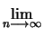
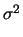
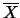
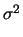
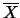

El Teorema del Límite Central
El último teorema de la sección previa es generalizado por otro teorema cuya importancia en aplicaciones de la probabilidad y estadística es mucho mayor. El teorema del límite central se enuncia seguidamente:
P |
(6.7) |
Donde  (z) es la distribución normal estándar.
(z) es la distribución normal estándar.
La importancia de este teorema es enorme, en especial porque no
tiene ninguna condición especial sobre el tipo de distribución
al que se aplica. Puede ser continua o discreta, no importa como
sean, en promedio la suma de estas variables se distribuyen como una
normal con media n y varianza
n. Este teorema
también es válido para la variable aleatoria
 = Sn/n para la que, si n se hace grande, distribuye como una
normal de media
y varianza
n. Este teorema
también es válido para la variable aleatoria
 = Sn/n para la que, si n se hace grande, distribuye como una
normal de media  y varianza
y varianza
 /n.
/n.
Para explorar mejor el valor de este teorema se presesenta la siguiente aplicación que permite partir de una distribución de datos cualquiera y analizar la distribución de probabilidad de los posibles promedios de muestras sobre la distribución original.